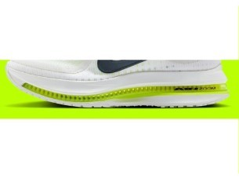
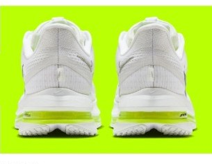

DAILY｜高級クッション
厚く弾むが、高い。
衝撃吸収155SAはデイリー67足で5位、前足部のエネルギーリターン68.3%は8位。性能点3.99はデイリー11位である。ただし価格は¥29,700で、1kmあたり約50円。コスパ点は2.5にとどまる。
クッションと弾みを両方ほしい人。かかとから着地する人。価格を気にしない人。
価格を重視する人。軽い靴が好きな人。


衝撃吸収155SAでクッションは4.5点。前足部のエネルギーリターン68.3%も、デイリーの中では高い。
かかとの幅は90.3mmと狭いほうだが、ヒール剛性は最高の5。安定性は4.5点ある。
摩耗深度は1.0mmで、推定寿命は約600km。価格が高いぶん、1kmあたり約50円は67足でも高いほうである。
5点満点。計測値を当サイトのルールで点数にしたもの。
クッション4.5、安定性4.5、耐久性4.0、グリップ3.5、スピード3.0、軽さ1.5。
高いほど衝撃をやわらげる。
摩耗深度から推定した寿命で計算。短いほど安い。
| ペガサス プレミアム | ボメロ プレミアム | ボメロ プラス | ペガサス 41 | |
|---|---|---|---|---|
| 価格 | ¥29,700 | ¥29,700 | ¥22,000 | ¥16,500 |
| 実測重量 | 308g | 326g | 289g | 281g |
| 衝撃吸収（SA） | 155 | 173 | 147 | 125 |
| エネルギーリターン前足部 | 68.3% | 64.4% | 68.8% | 61.4% |
| 摩擦係数 | 0.49 | 0.50 | 0.52 | 0.25 |
| 摩耗深度 | 1.0mm | 0.7mm | 0.8mm | 0.9mm |
| 性能点 | 3.99 | 4.36 | 4.00 | 3.22 |
| コスパ点 | 2.5 | 3.5 | 4 | 3 |
同じ¥29,700のボメロ プレミアムは、衝撃吸収、摩耗の少なさ、1kmあたりの費用で上回る。ボメロ プラスは¥7,700安く、反発はほぼ同じ。ペガサス 41より¥13,200高いが、衝撃吸収は30高い。
ドロップは10mm。曲げ剛性21.2Nは67足で4番目に硬い。摩擦係数は0.49で、グリップは3.5。通気性は5で、計測では蒸れにくい側に入る。
実測308g（US9）は、サイトの掲載値313gとほぼ同じ。ドロップは10mmある。同価格のボメロ プレミアムと履き比べてから決めたい。
週15kmなら約9か月で、推定寿命の600kmに届く。走る距離が少ない人ほど、1kmあたりの高さは気になりにくい。
クッションと反発はどちらも上位。ただ、同じ価格のボメロ プレミアムと、安いボメロ プラスに挟まれている。履き心地で選ぶ靴である。
※本記事は海外ラボ（RunRepeat）の計測データとメーカー公表値、当サイトの計算をもとにした分析です。計測はUS9（約27cm）です。1kmあたりの費用は摩耗深度から推定した寿命での概算です。価格は当サイトの掲載値で、変更されている場合があります。